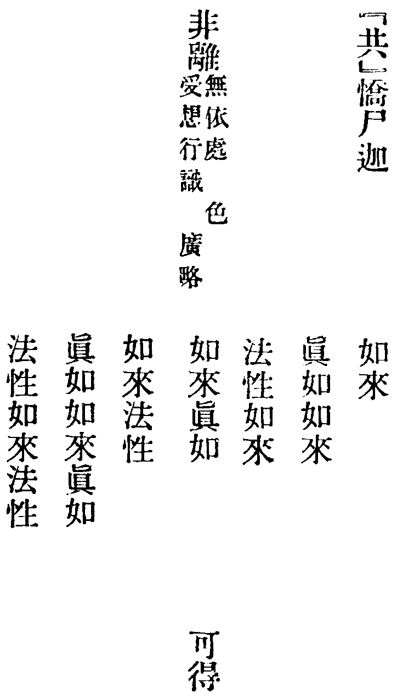
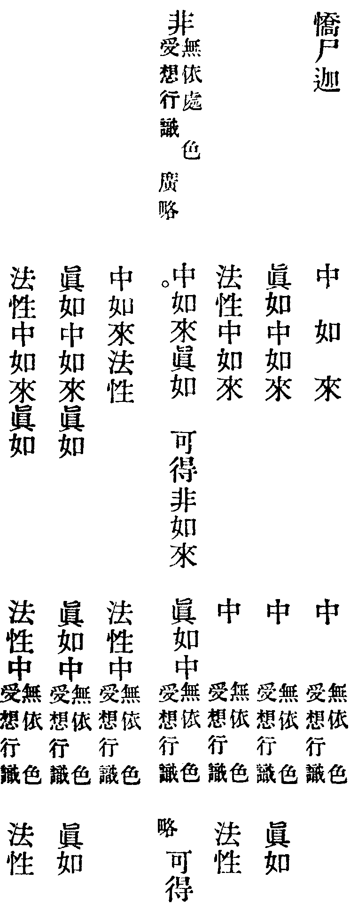
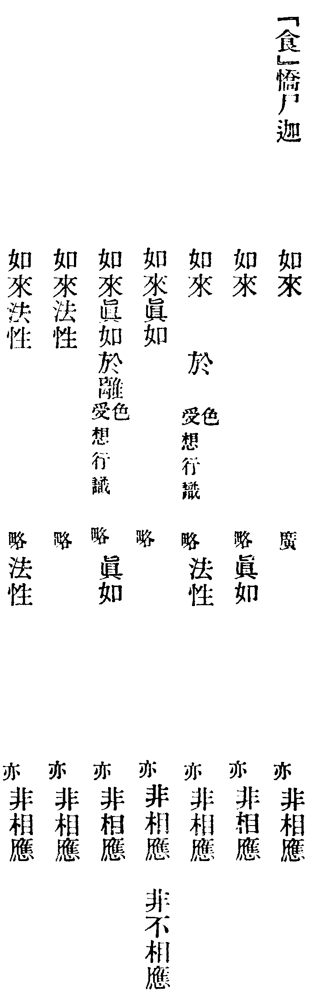

大般若波羅蜜多經關法卷第三
色 受。想。行。識。
眼處 耳。鼻。舌。身。意處。
色處 聲。香。味。觸。法處。
地界 水。火。風。空。識界。
苦聖諦 集。滅。道聖諦。
內空 外空(乃)內外空。空空。大空。勝義空。有為空。無為空。畢竟空。無際空。散空。無變異空。本性空。自相空。共相空。一切法空。不可得空。無性空。自性空(至)無性自性空。
四靜慮 四無量。四無色定。
八解脫 八勝處。九次第定。十徧處。
空解脫門 無相。無願解脫門。
五眼 六神通。
無忘失法 恒住捨性。
一切智 道相智。一切相智。
一切陀羅尼門 一切三摩地門。
聲聞乘 獨覺乘。無上乘。
(已上係主默二關法。本項內增減依本項)。
(已上隕字至味字。用此法。接陀羅尼至聲聞乘)。
○大般若波羅蜜多經卷第八十一
△初分天帝品第二十二之五(入)
『主』
| 善現。如來之心不住 | (布施波羅蜜多) | (廣) |
| (淨戒等) | ||
| 何以故。以 | (布施波羅蜜多) | 等不可得故 |
(上界呼善現。下界不住起。布施至異生法內一切智。在陀羅尼後。直至自字。准此。至一切智了。入聲聞乘。後添後二位。直跳入極喜異生。二種十地。上下界末。各添及法二字。至異生地。呼如是善現。結入默字。十地同)。
『默』
時具壽善現。謂舍利子言。如是菩薩摩訶薩。雖住般若波羅蜜多。而同如來。於一切法。都無所住。亦非不住。所以者何。(入)
舍利子。菩薩摩訶薩。雖住般若波羅蜜多。
| 而於 | (色) | (廣) | 非住非不住。 | |
| (受想行識) | (亦) | |||
| 何以故。以 | (色蘊) | 等無二相故 | ||
(上界舍利子起。下界於字入。逐一界盡呼。何以故。結至聲聞乘。添主關內。預流獨覺二位。本法了。直入極喜。異生添及法。准前。色至異生呼。後結)。
舍利子。菩薩摩訶薩。於般若波羅蜜多。隨非住非不住。以無所得為方便。應如是學。
△初分諸天子品第二十三之一
爾時會中有諸天子。竊作是念。諸藥叉等言詞呪句。雖復隱密。而尚可知。尊者善現。於此般若波羅蜜多。雖以種種言詞顯示。而我等輩。竟不能解。善現知彼心之所念。便告之言。汝等天子。於我所說。不能解耶。諸天子言。如是如是。具壽善現。復告彼言。我曾於此不說一字。汝亦不聞。當何所解。何以故。甚深般若波羅蜜多。文字言說皆遠離故。由此於中。說者聽者及能解者皆不可得。一切如來應正等覺。所證無上正等菩提。其相甚深。亦復如是。天子當知。如佛化身。化作無量苾蒭苾蒭尼。鄔波索迦鄔波斯迦。俱來集會。復化作一能說法人。於此眾中。宣揚妙法。於意云何。是中有實能說能聽能解者不。諸天子言不也大德。善現告言。如是天子。一切法皆如化。故般若中。說者聽者及能解者。都不可得。天子當知。如在夢中。夢見有佛教誡教授菩薩聲聞。於意云何。是中有實能說能聽能解者不。諸天子言不也大德。善現告言。如是天子。一切法皆如夢。故般若中。說者聽者及能解者。都不可得。天子當知。如有二人。處一山谷。各住一面。讚佛法僧。俱時發響。於意云何。此二響聲。能互相聞。互相解不。諸天子言不也大德。善現告言。如是天子。一切法皆如響。故般若中。說者聽者及能解者。都不可得。天子當知。如巧幻師。或彼弟子。於四衢道。幻作四眾及一佛身。處中說法。於意云何。是中有實能說能聽能解者不。諸天子言不也大德。善現告言。如是天子。一切法皆如幻。故般若中。說者聽者及能解者。都不可得。時諸天子。復作是念。尊者善現。於此般若波羅蜜多。雖復種種方便顯說欲令易解。而其意趣甚深轉甚深。微細更微細。難可測度。善現知彼心之所念。便告之曰。
『持』
| 天子當知 | (色) | (廣) | 非甚深非微細 | ||
| (受想行識) | (亦) | ||||
| 何以故 | (色) | (略) | 深細性 | 不可得故 | |
| (受想行識) | (亦) | ||||
(上界呼天子。下界受想起。添二亦字。內布施預流各有略內。預流略云。一來向一來果。乃至阿羅漢向阿羅漢果。無空解脫。至極喜地。連念二回。初一徧單。後一徧地地添法字異生地准此。入定字關)。
『定』
| 時諸天子。復作是念。尊者善現所說法中不施設 | (色) | (廣) |
| (受想行識) | ||
| 何以故 | (色蘊) | 性等不可說故 |
(上界呼尊者起。下界不施設起。至異生地法。二種十地。准持字關。入正經)。
尊者善現所說法中。亦不施設文字語言。何以故。文字語言性等不可說故。爾時善現。知諸天子心所念法。便告之言。如是如是。如汝所念。諸法乃至無上菩提。文字語言。皆所不及。故於般若波羅蜜多。無說無聽。亦無解者。是故汝等於諸法中。應隨所說修堅固忍。諸有欲住欲證預流一來不還阿羅漢果。亦依此忍而得究竟。諸有欲住欲證獨覺所得菩提。亦依此忍而得究竟。諸有欲住欲證無上正等菩提。要依此忍而得究竟。如是諸天子。諸菩薩摩訶薩。從初發心。乃至究竟。應住無說無聽無解甚深般若波羅蜜多。常勤修學。不應捨離。時諸天子。心復念言。尊者善現。於今欲為何等有情說何等法。善現爾時知諸天子心所念事。便告之曰。天子當知。我今欲為如幻如化如夢有情。說如幻如化如夢之法。何以故。如是聽者。於所說中。無聞無解無所證故。時諸天子。即復問言。能說能聽及所說法。皆如幻如化如夢事耶。善現答言。如是如是。如汝所說。如幻有情。為如幻者說如幻法。如化有情。為如化者說如化法。如夢有情。為如夢者說如夢法。(入)
『魔』
| 天子當知 | (我) | (廣) | 如幻如化如夢所見。 |
| (有情等) | |||
| 何以故。以 | (我) | 等自性空故 | |
(上界天子起。下界有情去我界。後入五蘊。界界呼何以故。結至無為界。終異生。後入無為界。十地各添法。一徧准前持字。無為界了。呼天子。都結入兵字)。
天子當知。由此緣故。我作是說。如幻有情。為如幻者說如幻法。如化有情。為如化者說如化法。如夢有情。為如夢者說如夢法。
『兵』
時諸天子。問善現言。今尊者為但說我等。
(入下五行俱入如幻。後所以者何結)。
| 色等乃至阿耨多羅三藐三菩提 | 如幻如化如夢所見 |
| 為亦說微妙寂靜究竟涅槃 | |
| 邪善現言諸天子我不但說我等色等乃至阿耨多羅三藐三菩提 | |
| 亦復宣說微妙寂靜究竟涅槃 | |
| 天子當知設更有法勝涅槃者。我亦說為 |
所以者何。幻化夢事。與一切法。乃至涅槃。皆悉無二無二分故(改品)。
△初分受教品第二十四之一
爾時具壽舍利子。具壽大目連。具壽執大藏。具壽滿慈子。具壽大迦多衍那。具壽大迦葉波等。諸大聲聞。及無量百千菩薩摩訶薩。同時舉聲。聞善現曰。所說般若波羅蜜多。如是甚深。難見難覺。非所尋思。超尋思境。微妙寂靜。最勝第一。唯極聖者自內所證。世總慧人所不能測。於如是法。誰能信受。善現答言。有菩薩摩訶薩。住不退轉地。於此甚深難見難覺非所尋思超尋思境微妙寂靜最勝第一般若波羅蜜多。能深信受。復有已見聖諦及漏盡阿羅漢。為滿所願。於此般若波羅蜜多。亦能信受。復有善男子善女人等。已於過去無量無數百千俱胝那庾多佛所。親近供養。發弘誓願。植眾善本。利根聰慧。諸善知識所攝受者。於此甚深難見難覺非所尋思超尋思境微妙寂靜最勝第一般若波羅蜜多。亦能信受。何以故。(入)
『自』
| 如是人等終不以 | (空不空) | 分別 | (色) | (廣) | |
| (受想行識) | |||||
| 亦不以 | (色) | (略) | 分別 | (空不空) | |
| (受想行識) | |||||
(空不空後。乃至遠離七法。色一界盡換眼處。上界呼。如是人等起。下界不以起。每界遇空。一法上廣。餘六法並略。內布施四念住。佛十力。預流向果等。四界並廣。極喜地下界秪略。中間五地苦諦布施。一切智本法。前後並如上主默二關。色至極喜地終)。
△初分學般若品第二十六之一
時天帝釋。心生是念。尊者善現。智慧甚深。不壞假名而說法性。佛知其意。便印彼言。如憍尸迦心之所念。具壽善現。智慧甚深。不壞假名而說法性。時天帝釋即白佛言。尊者善現。於何等法不壞假名而說法性。佛告。
『隕』
| 憍尸迦 | (色) | (廣) | 但假名。如是假名。不離法性。 | |
| (受想行識) | ||||
| 具壽善現。不壞如是色等假名。而說色等法性。 | ||||
| 所以者何。色等法性。無壞無不壞。是故善現所說亦無壞無不壞。 | ||||
(上界呼憍尸迦。下不呼。苦諦布施准主默關。一切智依元位。聲聞移在菩薩法後。向下例此。都結呼憍尸迦)。
憍尸迦。具壽善現。於如是法。不壞假名而說法性。具壽善現語帝釋言。憍尸迦。如是如是。如佛所說諸所有法。無非假名。憍尸迦。菩薩摩訶薩。知一切法但假名已。應學般若波羅蜜多。(入)
『銷』
| 憍尸迦。菩薩摩訶薩。如是學時。不於 | (色) | (廣) | 學。 | ||
| (受想行識) | |||||
| 何以故。憍尸迦。是菩薩摩訶薩。不見 | (色) | (略) | 可於中學 | ||
| (受想行識) | (故) | ||||
(色至聲聞乘終。上界呼憍尸迦。下界不於起。內四念住。佛十力預流向三。下界廣)。
『寶』
時天帝釋。問善現言。
| 大德。何緣菩薩摩訶薩不見 | (色) | (受想行識) | (廣) | ||
(上界呼大德。下界不見入)。
『掌』
(逐四行盡換眼處。上界呼憍尸。下受想起。懸不見不可。下界入處。逐行。下界雙行。內空真如。一廣八略。一來向云。乃至阿羅漢果去)。
憍尸迦。若菩薩摩訶薩。不於空學。是菩薩摩訶薩。為於空學。何以故。無二分故。(入)
『摩』
| 憍尸迦。若菩薩摩訶薩。不於 | (色) | (廣) | 空學。 | |
| (受想行識) | ||||
| 是菩薩摩訶薩。為於 | (色) | (略) | 空學。 | |
| (受想行識) | ||||
| 何以故。無二分故。 | ||||
(上憍尸起。下不於起。界界盡呼。何以故。結秪預流向。界廣。色至聲聞乘終。入後段尼)。
『尼』
| 憍尸迦。若菩薩摩訶薩。於 | (色) | (廣) | 空學。無二分故。 |
| (受想行識) |
(色至聲聞乘終。上界呼憍尸迦。下於字入。至此苦諦地界。後入布施真如。後入上同)。
『珠』
| 憍尸迦。是菩薩摩訶薩。能於 | (布施波羅蜜多) | (廣) | 學。 |
| (淨戒等) | |||
| 何以故。無二分故。 | |||
(上呼憍尸。下能於起。內布施苦諦。依元位不移至聲聞乘。終入五字)。
『五』
| 憍尸迦。若菩薩摩訶薩。能於 | (布施波羅蜜多) | (廣) | 學。無二分故。 |
| (淨戒等) | |||
| 是菩薩摩訶薩。能學無量無數無邊不可思議清淨佛法。何以故。無二分故 | (入) | ||
(布施至聲聞乘終。上界呼憍尸迦。下界能於起。逐一界盡呼。是菩薩一段結)。
『彩』
憍尸迦。若菩薩摩訶薩。能學無量無數無邊不可思議清淨佛法。
| 是菩薩摩訶薩。不為 | (色) | (廣) | 增減故學 | (入) |
| (受想行識) |
(上界呼憍尸。下不為起。逐一界用。後應字關。何以故結。內苦諦布施。准前主默二關。向下並同色。至聲聞乘終)。
『應』
| 憍尸迦。若菩薩摩訶薩。不為 | (色) | (廣) | 增減攝故學。無二分故。 | ||||
| (受想行識) | |||||||
| 是菩薩摩訶薩。不為 | (色) | (略) | 攝受壞滅故學。何以故。以色蘊等無二分故 | ||||
| (受想行識) | |||||||
(上界呼憍尸。下界不為起。逐界呼。何以故結。布施預流向廣。色至聲聞乘終)。
『方』
| (時舍利子。問善現言) | 善現。菩薩摩訶薩。如是學時。 | |||
| 不為 | (色) | (廣) | 攝受壞滅故學 | |
| (受想行識) | (邪) | |||
(上呼善現。下不為起。色至聲聞乘終。入現)。
『現』
| (善現答言)(如是如是。舍利子) | 菩薩摩訶薩。 | ||
| (時舍利子問)(善現)(言)(何緣) | |||
| 如是學時。不為 | (色) | (廣) | 攝受壞滅故學。 |
| (受想行識) | |||
(現字關二徧同。色起聲聞乘終。第一徧。上界呼如是。下界不為起。第二徧。上界善現起。下亦不為起。內言字秪有色。有餘云。善現何緣)。
『天』
| (時俱壽善現答) | 舍利子 | (言) | ||
| 菩薩摩訶薩。如是學時不見有 | (色) | (廣) | 是可攝受。及所壞滅。 | |
| (受想行識) | ||||
| 亦不見有能攝受 | (色) | (略) | 及壞滅者。 | |
| (受想行識) | ||||
| 何以故。以 | (色蘊) | 等若能若所。內外俱空。不可得故。 | ||
(上界呼舍利子。下界不見起。只色一法。有言字。內布施預流向廣。色至聲聞乘終。入後一段。舍利子)。
| 舍利子。若菩薩摩訶薩。於 | (色) | (廣) | |
| (受想行識) | |||
(上下界俱從於字起。只色一法。呼舍利子。聲聞界分為三段。入結)。
不見是可攝受。及所壞滅。亦不見有能攝受。及壞滅者。而學般若波羅蜜多。是菩薩摩訶薩。能成辦一切智智。時舍利子。問善現言。菩薩摩訶薩。如是學般若波羅蜜多。能成辦一切智智邪。善現答言。菩薩摩訶薩。如是學般若波羅蜜多。能成辦一切智智。於一切法。不為攝受壞滅。而方便學故。舍利子言。若菩薩摩訶薩。於一切法。不為攝受壞滅。而方便學者。云何能成辦一切智智。善現言。
『宮』
舍利子。是菩薩摩訶薩。行般若波羅蜜多時。
| 不見 | (色) | (廣)(略) | 若 | (生) | 若 | (滅) |
| (受想行識) |
何以故。以(色蘊)等性空無所有。不可得故。舍利子。是菩薩摩訶薩。如是學般若波羅蜜多。能成辦一切智智。以無所學無所成辦為方便故。
(上界遇生滅呼。舍利子起。餘四法并下界。並從不見起。逐一本法。何以故結。一廣四略。內四念住。佛十力預流向並廣。色至聲聞乘。分上下界終)。
如是舍利子。是菩薩摩訶薩。行般若波羅蜜多時。於一切法。不見若生若滅。若取若捨。若染若淨。若集若散。若增若滅。而學般若波羅蜜多。則能成辦一切智智。以無所學無所成辦為方便故。
△初分求般若品第二十七
爾時天帝釋。問舍利子言。大德。菩薩摩訶薩所行般若波羅蜜多。當於何求。舍利子言憍尸迦。菩薩摩訶薩。所行般若波羅蜜多。當於善現所說中求。時天帝釋。謂善現言。今尊者舍利子所說。將非大德神力大德為依處邪。善現告言。憍尸迦。此非我神力。非我為依處。天帝釋言。是誰神力。誰為依處。善現報言。是如來神力。如來為依處。天帝釋言大德。一切法無依處。如何可言舍利子所說。是如來神力。如來為依處。善現告言。憍尸迦。如是如是。如汝所說。一切法無依處。是故如來非所依處。亦無所依。但為隨順世俗施設。說為依處。(入)
『共』

(真如不避本位。食字關同遇。換本法處。初一徧。呼憍尸迦。先從非離起入關。一廣六略。便入單非。亦呼憍尸一段。一廣十三法略。上下二可得一法。盡方受想行識。色至法性可得。換眼處。內預流向廣。苦諦布施。准前主默關。向下同無依處。至聲聞乘終)。

『食』

(此關二番。初番單。從憍尸於字起至法性。上界呼如來。下界於字起。行行法法。總言非不相應。七行盡起。第二番亦呼憍尸。呼於離色。至於離法性。七行盡了。換眼處亦二番。至聲聞乘終了。呼後憍尸。總結第二番。下界亦從於離起內預流向廣。本法移改。依上主默字關本)。
憍尸迦。彼尊者舍利子所說。是一切法。非離非即。非相應非不相應。如來之神力。如來為依處。以無依處。為依處故(入器字正經)。
爾時具壽善現。復告天帝釋言。憍尸迦。汝先所問。菩薩摩訶薩。所行般若波羅蜜多。當於何求者。(入)
『器』
復次憍尸迦。菩薩摩訶薩。所行般若波羅蜜多。
| 不應於 | (色) | (廣) | (添) | 求。不應離 | (色) | (略) | (添) | 求。 |
| (受想行識) | (受想行識) | |||||||
| 所以者何。若 | (色) | (略) | (添) | 若離 | (色) | (略) | (添) | |
| (受想行識) | (受想行識) | |||||||
若菩薩摩訶薩。若般若波羅蜜多。若求。如是一切。皆非相應。非不相應。非有色。非無色。非有見。非無見。非有對。非無對。咸同一相。所謂無相。何以故。憍尸迦。菩薩摩訶薩。所行般若波羅蜜多。
| 非 | (色) | (廣) | (添) | 非離 | (色) | (略) | (添) |
| (受想行識) | (受想行識) |
所以者何。如是一切。皆無所有。性不可得。由無所有不可得故。菩薩摩訶薩。所行般若波羅蜜多。
| 非 | (色) | (略) | (添) | 非離 | (色) | (略) | (添) |
| (受想行識) | (受想行識) |
是故菩薩摩訶薩。所行般若波羅蜜多。
| 不應於 | (色) | (略) | (添) | 求 | 不應離 | (色) | (略) | (添) | 求 |
| (受想行識) | (受想行識) |
(色字關內。第一番單一徧。色起至聲聞乘。第二番從添字入真如。為一番呼。復以憍尸法性同。第三以法性為一番。亦呼復次乃添字。入懸處。下界入。色至關盡不應離方。換眼處。此內云一來向。乃至阿羅漢果)(改品)。
△初分歎眾德品第二十八
| (時天帝釋。白善現言。大德) | 菩薩摩訶薩。所行般若波羅蜜多。是大波羅蜜多。是無量波羅蜜多。是無邊波羅蜜多。 | ||||
| (善現告言。如是如是。如汝所說。憍尸迦) | |||||
| 憍尸迦 | 諸預流者。於此中學得預流果。 | ||||
| (若過去。若現在。若未來) | |||||
諸一來者。於此中學得一來果。諸不還者。於此中學得不還果。諸阿羅漢。於此中學得阿羅漢果。諸獨覺者。於此中學得獨覺菩提。諸菩薩摩訶薩。於此中學能成熟有情嚴淨佛土。證得無上正等菩提。
(上是入品正經。分為二番。至此呼。前善現起。第二番內有三世。至此入關)。
『百』
| 憍尸迦 | (色) | (廣) | 大故 |
| (受想行識) |
菩薩摩訶薩。所行般若波羅蜜多亦大。所以者何。以(色蘊)等前中後際皆不可得。故說為大。由彼大故。菩薩摩訶薩所行般若波羅蜜多。亦說為大。
(色起至聲聞乘終。逐一界呼。所以者何。結換眼處。上界呼。憍尸後有都結)。
憍尸迦。由此緣故。我作是說。色等大故。菩薩摩訶薩所行般若波羅蜜多亦大。
『味』
| 憍尸迦 | (色) | (廣) | 無量故 |
| (受想行識) |
菩薩摩訶薩所行般若波羅蜜多亦無量。所以者何以(色蘊)等量不可得。故說無量。憍尸迦。譬如虗空量不可得。色蘊等亦如是量不可得。憍尸迦。虗空無量故(色蘊)等亦無量。(色蘊)等無量故菩薩摩訶薩所行般若波羅蜜多亦無量。
(上界呼憍尸迦。色起至陀羅尼終)。
〔日〕第八十一(之五) 『主』(布施起異生終)改品『默』(色起至異生地終)『持定』(並色起至異生地法終)『魔』(我起至真如終)。
第八十三(之三) 『自』(布施起至極喜地終)。
第八十七(之三) 『五』(布施起聲聞終)『彩應方』(並色起同聲聞乘終)。
第八十八(之四) 『現天』(並色起同聲聞乘終)『宮』(色起至耳界終)。
第九十(之二) 『共』(耳界起至四靜慮終)。
〔月〕第九十一(之三) 『共』(八解脫起聲聞乘終)。
第九十二(之四) 『食』(色起至布施終)。
第九十三(之五) 『食』(四靜慮起聲聞乘終)結經。
第九十四(之六) 『器』(色起一切智終)。
第九十五(之七) 『器』(陀羅尼起聲聞乘終)真如(色起至真如終)。
第九十六(之八) 真如(布施起聲聞終)法性(色起至耳界終)。
第九十七(之九) 法性(鼻界起至預流向終)。
大般若波羅蜜多經關法卷第三